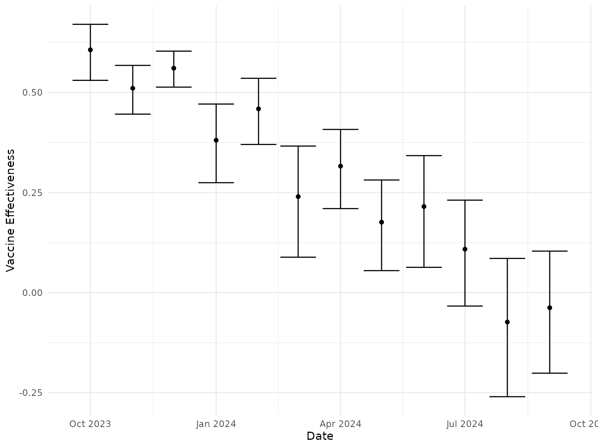
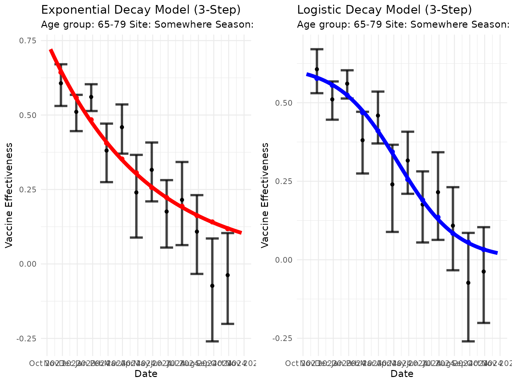
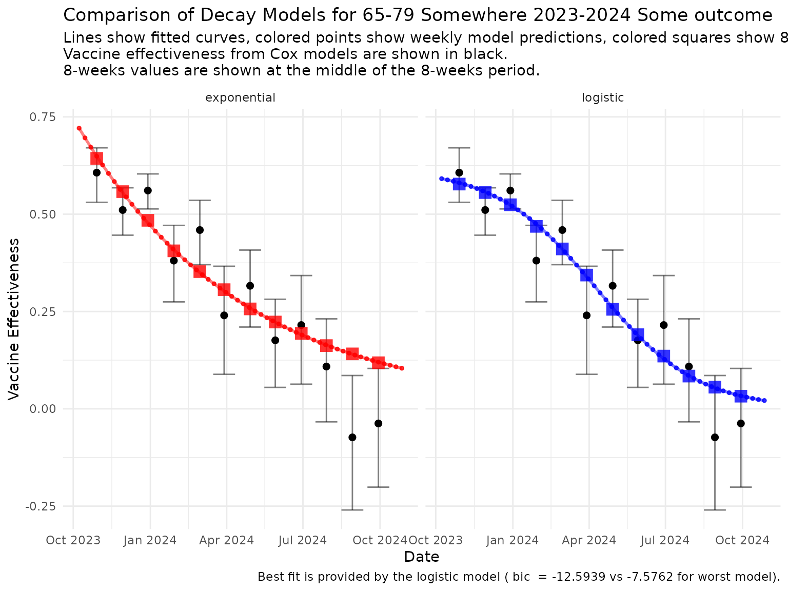
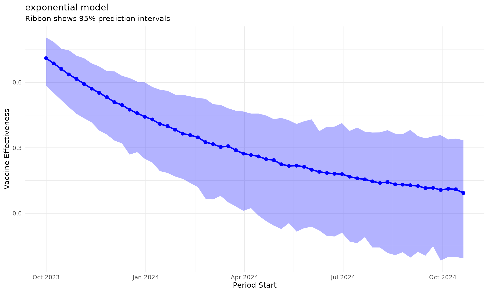
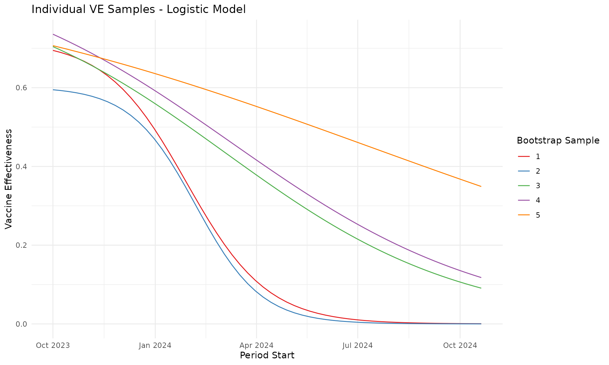

Interpolate monthly data to weekly data
interpolate_monthly_data_to_weekly_data.RmdIntroduction
This vignette demonstrates an approach to interpolate weekly data from 8-week data for vaccine effectiveness using a 3-step strategy: nlxb for starting values, nls for parameter optimization, and bootstrap for covariance matrix estimation.
Understanding the 3-Step Strategy
The 3-step fitting strategy consists of:
-
Step 1: nlxb - Uses the
nlsrpackage to find good starting values for the parameters -
Step 2: nls - Uses the standard
nlsfunction with the starting values from step 1 - Step 3: Bootstrap - Uses parametric bootstrap to estimate the covariance matrix and parameter uncertainty
Sample Data
We use a toy dataset provided in the package, containing 8-weeks estimates of vaccine effectiveness (VE) for 12 months.
data("sample_8_weeks_data")
head(sample_8_weeks_data)
#> date_min date_max estimate CIlow CIhigh
#> 1 2023-10-01 2023-11-25 0.3276797 0.2154526 0.4983649
#> 2 2023-11-01 2023-12-26 0.3770901 0.2416050 0.5885513
#> 3 2023-12-01 2024-01-25 0.5349426 0.3715068 0.7702782
#> 4 2024-01-01 2024-02-25 0.5214007 0.3533253 0.7694288
#> 5 2024-02-01 2024-03-27 0.6580922 0.5178351 0.8363384
#> 6 2024-03-01 2024-04-25 0.8078334 0.6814823 0.9576109
ggplot(sample_8_weeks_data, aes(x = date_min, y = 1 - estimate)) +
geom_point() +
geom_errorbar(aes(ymin = 1 - CIhigh, ymax = 1 - CIlow)) +
theme_minimal() +
labs(x = "Date", y = "Vaccine Effectiveness")
Creating Individual Decay Models
nbootstrap <- 100
seed_to_use <- 666Exponential Decay Model
# Create exponential model using the R6 class
exponential_model <- DecayModel$new(
name = "exponential",
decay_function = exponential_decay(),
param_config = list(
start = c(VE0 = 0.7, decay_rate = 0.1),
lower = c(0.01, 0.001),
upper = c(0.99, 1.0),
names = c("VE0", "decay_rate")
)
)
# Fit the model using 3-step strategy with custom bootstrap settings
exponential_result <- exponential_model$fit_3step(
estimate = sample_8_weeks_data$estimate,
ci_low = sample_8_weeks_data$CIlow,
ci_up = sample_8_weeks_data$CIhigh,
periods_starts = sample_8_weeks_data$date_min,
periods_ends = sample_8_weeks_data$date_max,
nboot = nbootstrap,
seed = seed_to_use
)
# View the results
cat("Exponential Model Results:\n")
#> Exponential Model Results:
cat("Coefficients:", paste(names(exponential_model$get_optimal_params()),
"=", round(exponential_model$get_optimal_params(), 4),
collapse = ", "
), "\n")
#> Coefficients: VE0 = 0.8877, decay_rate = 0.0557
cat("BIC:", exponential_model$get_bic(), "\n")
#> BIC: -6.486616
cat("Covariance Matrix:\n")
#> Covariance Matrix:
print(exponential_result$covariance_matrix)
#> VE0 decay_rate
#> VE0 0.0041667081 0.0006664864
#> decay_rate 0.0006664864 0.0001455073Logistic Decay Model
# Create logistic model using the R6 class
logistic_model <- DecayModel$new(
name = "logistic",
decay_function = logistic_decay(),
param_config = list(
start = c(VE0 = 0.7, decay_rate = 0.1, constant = 0.5),
lower = c(0.01, 0.001, 0.01),
upper = c(0.99, 1.0, 2.0),
names = c("VE0", "decay_rate", "constant")
)
)
# Fit the model using 3-step strategy
logistic_result <- logistic_model$fit_3step(
estimate = sample_8_weeks_data$estimate,
ci_low = sample_8_weeks_data$CIlow,
ci_up = sample_8_weeks_data$CIhigh,
periods_starts = sample_8_weeks_data$date_min,
periods_ends = sample_8_weeks_data$date_max,
nboot = nbootstrap,
seed = seed_to_use
)
# View the results
cat("Logistic Model Results:\n")
#> Logistic Model Results:
cat("Coefficients:", paste(names(logistic_model$get_optimal_params()),
"=", round(logistic_model$get_optimal_params(), 4),
collapse = ", "
), "\n")
#> Coefficients: VE0 = 0.7517, decay_rate = 0.1404, constant = 0.0697
cat("BIC:", logistic_model$get_bic(), "\n")
#> BIC: -13.05747
cat("Covariance Matrix:\n")
#> Covariance Matrix:
print(logistic_result$covariance_matrix)
#> VE0 decay_rate constant
#> VE0 0.018307538 -0.006663282 0.016489514
#> decay_rate -0.006663282 0.003320058 -0.006499278
#> constant 0.016489514 -0.006499278 0.016215018Visualizing Individual Models
# Plot exponential model
p1 <- exponential_model$plot_optimal(
estimate = sample_8_weeks_data$estimate,
ci_low = sample_8_weeks_data$CIlow,
ci_up = sample_8_weeks_data$CIhigh,
periods_starts = sample_8_weeks_data$date_min,
periods_ends = sample_8_weeks_data$date_max,
title = "Exponential Decay Model (3-Step)",
color = "red",
age_group = "65-79",
site = "Somewhere",
season = "2023-2024",
outcome = "Some outcome"
)
# Plot logistic model
p2 <- logistic_model$plot_optimal(
estimate = sample_8_weeks_data$estimate,
ci_low = sample_8_weeks_data$CIlow,
ci_up = sample_8_weeks_data$CIhigh,
periods_starts = sample_8_weeks_data$date_min,
periods_ends = sample_8_weeks_data$date_max,
title = "Logistic Decay Model (3-Step)",
color = "blue",
age_group = "65-79",
site = "Somewhere",
season = "2023-2024",
outcome = "Some outcome"
)
grid.arrange(p1, p2, ncol = 2)
Comparing multiple models at once
comparison_result <- compare_decay_models(
model_names = c("exponential", "logistic"),
estimate = sample_8_weeks_data$estimate,
ci_low = sample_8_weeks_data$CIlow,
ci_up = sample_8_weeks_data$CIhigh,
periods_starts = sample_8_weeks_data$date_min,
periods_ends = sample_8_weeks_data$date_max,
nboot = nbootstrap,
seed = seed_to_use
)
# View comparison results
cat("Model Comparison Summary:\n")
#> Model Comparison Summary:
print(comparison_result$summary)
#> model aic bic
#> 1 exponential -7.941336 -6.486616
#> 2 logistic -14.997094 -13.057468
# Find best model based on BIC
best_model_bic <- get_best_model(comparison_result, criterion = "bic")
cat("\nBest model based on BIC:", best_model_bic$model_name, "\n")
#>
#> Best model based on BIC: logistic
cat("Best BIC:", best_model_bic$criterion, "\n")
#> Best BIC: -13.05747Model Comparison Plot
# Create comparison plot using BIC criterion
comparison_plot <- plot_model_comparison(
comparison_result = comparison_result,
estimate = sample_8_weeks_data$estimate,
ci_low = sample_8_weeks_data$CIlow,
ci_up = sample_8_weeks_data$CIhigh,
periods_starts = sample_8_weeks_data$date_min,
periods_ends = sample_8_weeks_data$date_max,
criterion = "bic",
age_group = "65-79",
site = "Somewhere",
season = "2023-2024",
outcome = "Some outcome"
)
print(comparison_plot)
Generate many weekly VE samples with uncertainty from covariance matrix
The new generate_VE_based_on_boot_fit method allows us
to generate VE samples based on the bootstrap covariance matrix,
providing uncertainty quantification:
# Generate VE samples based on bootstrap fit
ve_samples <- best_model_bic$model$generate_VE_based_on_boot_fit(
periods_starts = sample_8_weeks_data$date_min,
periods_ends = sample_8_weeks_data$date_max,
n_weekly_ve_to_generate = 1000
)
print(head(ve_samples, 10))
#> period_start period_end VE ve_sample
#> 1 2023-10-01 2023-10-07 0.6319967 1
#> 2 2023-10-08 2023-10-14 0.6301871 1
#> 3 2023-10-15 2023-10-21 0.6279660 1
#> 4 2023-10-22 2023-10-28 0.6252437 1
#> 5 2023-10-29 2023-11-04 0.6219132 1
#> 6 2023-11-05 2023-11-11 0.6178477 1
#> 7 2023-11-12 2023-11-18 0.6128982 1
#> 8 2023-11-19 2023-11-25 0.6068925 1
#> 9 2023-11-26 2023-12-02 0.5996340 1
#> 10 2023-12-03 2023-12-09 0.5909037 1VE with Uncertainty Bands
# Plot VE with uncertainty bands
uncertainty_plot <- best_model_bic$model$plot_VE_with_uncertainty(
periods_starts = sample_8_weeks_data$date_min,
periods_ends = sample_8_weeks_data$date_max,
title = "Logistic Model VE with uncertainty",
color = "darkblue",
alpha = 0.4,
show_points = TRUE
)
print(uncertainty_plot)
Show individual VE samples
# Plot individual bootstrap samples
some_ve_plot <- best_model_bic$model$plot_ve_samples(
periods_starts = sample_8_weeks_data$date_min,
periods_ends = sample_8_weeks_data$date_max,
n_samples = 5,
title = "Individual VE Samples - Logistic Model",
alpha = 1
)
print(some_ve_plot)